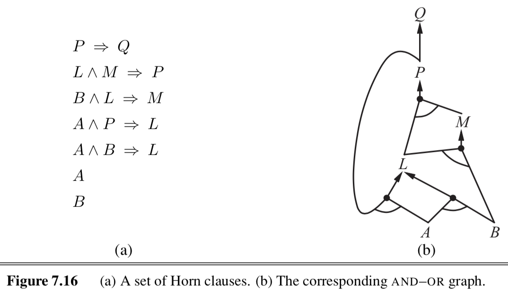
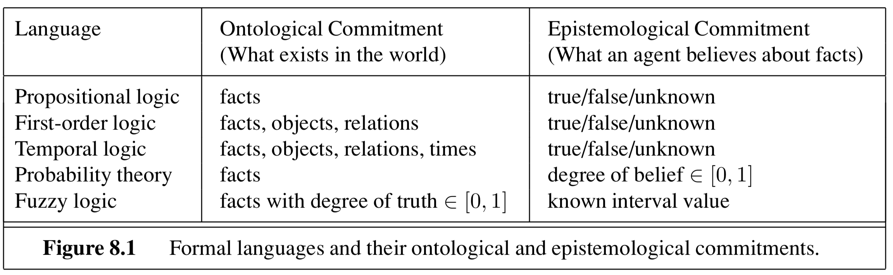
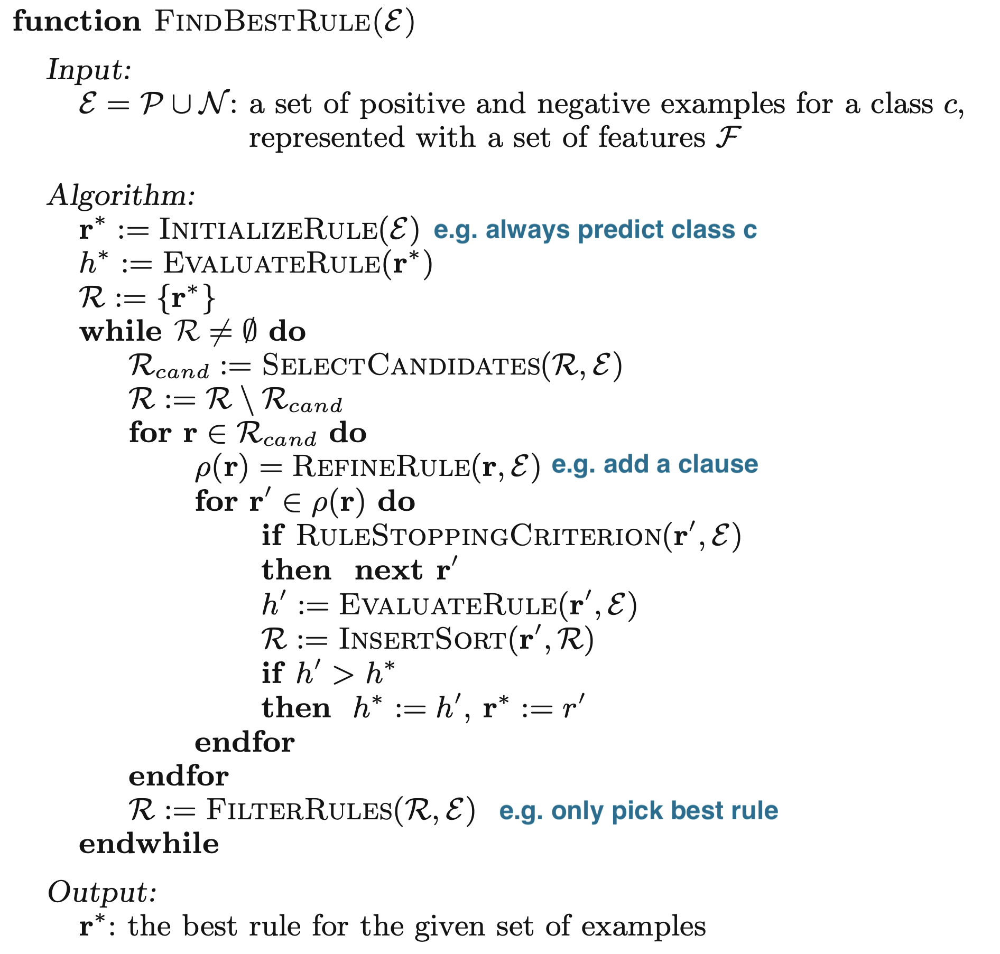
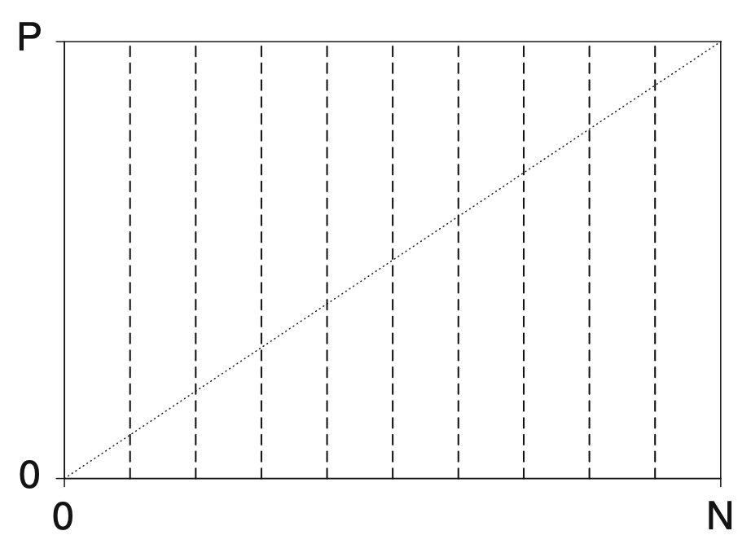

logic
view markdownSome notes on logic based on Berkeley’s CS 188 course and “Artificial Intelligence” Russel & Norvig 3rd Edition + foundations of rule learning (furnkranz et al. 2014)
logical agents - 7.1-7.7 (omitting 7.5.2)
- knowledge-based agents - intelligence is based on reasoning that operates on internal representations of knowledge
- deductive - general-to-specific
- inductive - specific-to-general
- 3 steps: given a percept, the agent
- adds the percept to its knowledge base (KB)
- asks the knowledge base for the best action
- tells the knowledge base that it has taken that action
- 2 approaches
- declarative approach - tell sentences until agent knows how to operate
- know something, can verbalize it
- procedural approach - encodes desired behaviors as program code
- intuitively know how to do it (ex. riding a bike)
- declarative approach - tell sentences until agent knows how to operate
- ex. Wumpus World
- logical entailment between sentences
- $A \vDash B$ means B follows logically from A (A implies B)
- logical inference - showing entailment
- model checking - try everything to see if A $\implies$ B
- this is sound = truth-preserving
- complete - can derive any sentence that is entailed
- TT-ENTAILS
- recursively enumerate all sentences by assigning true, false to each variable
- check if these are valid within the KB
- if they are, they must also match the query (otherwise return false)
- grounding - connection between logic and real environment (usually sensors)
- theorem properties
- validity - tautalogy - true under all models
- satisfiable - true under some model
- ex. boolean-SAT
- monotonicity - set of implications can only increase as info is added to the knowledge base
- if $KB \implies A$ then $KB \land B \implies A$
theorem proving
- resolution rule - resolves different rules with each other - leads to complete inference procedure
- CNF - conjunctive normal form - conjunction (and) of clauses (with ors)
- ex: $ ( \neg A \lor B) \land \neg C \land (D \lor E)$
- anything can be expressed as this
- horn clause - at most one positive
- definite clause - disjunction of literals with exactly one positive: ex. ($A \lor \neg B \lor \neg C$)
- goal clause - no positive: ex. ($\neg A \lor \neg B \lor \neg C$)
- benefits
- easy to understand
- forward-chaining / backward-chaining are applicable
- deciding entailment is linear in size (KB)
-
forward/backward chaining: checks if q is entailed by KB of definite clauses
- data-driven
- keep adding until query is added or nothing else can be added
-

- backward chaining works backwards from the query
- goal-driven
- keep going until get back to known facts
- checking satisfiability
- complete backtracking
- davis-putnam algorithm = DPLL - like TT-entails with 3 improvements
- early termination
- pure symbol heuristic - pure symbol appears with same sign in all clauses, can just set it to the proper value
- unit clause heuristic - clause with just one literal or one literal not already assigned false
- other improvements (similar to search)
- component analysis
- variable and value ordering
- intelligent backtracking
- random restarts
- clever indexing
- davis-putnam algorithm = DPLL - like TT-entails with 3 improvements
- local search
- evaluation function can just count number of unsatisfied clauses (MIN-CONFLICTS algorithm for CSPs)
- WALKSAT - randomly chooses between flipping based on MIN-CONFLICTS and randomly
- runs forever if no soln
- underconstrained problems are easy to find solns
- satisfiability threshold conjecture - for random clauses, probability of satisfiability goes to 0 or 1 based on ratio of clauses to symbols
- hardest problems are at the threshold
- complete backtracking
agents based on propositional logic
- fluents = state variables that change over time
- can index these by time
- effect axioms - specify the effect of an action at the next time step
- frame axioms - assert that all propositions remain the same under actions
- succesor-state axiom: $F^{t+1} \iff ActionCausesF^t \lor (F^t \land -ActionCausesNotF^t )$
- ex. $HaveArrow^{t+1} \iff (HaveArrow^t \land \neg Shoot^t)$
- makes things stay the same unles something changes
- state-estimation: keep track of belief state
- can just use 1-CNF (conjunctions of literals: ex. $WumpusAlive \land L_2 \land B$)
- 1-CNF includes all states that are in fact possible given the full percept history
- conservative approximation - contains belief state, but also extraneous stuff
- planning
- could use $A^*$ with entailment
- otherwise, could use SATPLAN
- SATPLAN - how to make plans for future actions that solve the goal by propositional inference
- basic idea
- make assertions
- transitions up to some max time $t_{final}$
- assert that goal is achieved at time $t_{final}$ (ex. havegold)
- present this to a SAT solver
- must add precondition axioms - states that action occurrence requires preconditions to be satisfied
- ex. can’t shoow without arrow
- must add action exclusion axioms - one action at a time
- ex. can’t shoot and move at once
- must add precondition axioms - states that action occurrence requires preconditions to be satisfied
first-order logic - 8.1-8.3.3

- basically added objects, relations, quantifiers ($\exists, \forall$)
- declarative language - semantics based on a truth relation between sentences and possible worlds
- has compositionality - meaning decomposes
- sapir-whorf hypothesis - understanding of the world is influenced by the language we speak
- 3 elements
- objects - john (cannot appear by itself, need boolean value)
- relations - set of tuples (ex. brother(richard, john))
- functions - only one value for given input (ex. leftLeg(john))
-
sentences return true or false
- combine these things
- first-order logic assumes more about the world than propositional logic
- epistemological commitments - the possible states of knowledge that a logic allows with respect to each fact
- higher-order logic - views relations and functions as objects in themselves
- first-order consists of symbols
- constant symbols - stand for objects
- predicate symbols - stand for relations
- function symbols - stand for functions
- arity - fixes number of args
- term - logical expresision tha refers to an object
- atomic sentence - formed from a predicate symbol optionally followed by a parenthesized list of terms
- true if relation holds among objects referred to by the args
- ex. Brother(Richard, John)
- interpretation - specifies exactly which objects, relations and functions are referred to by the symbols
inference in first-order logic - 9.1-9.4
- propositionalization - can convert first-order logic to propositional logic and do propositional inference
- universal instantiation - we can infer any sentence obtained by substituting a ground term for the variable
- replace “forall x” with a specific x
- existential instantiation - variable is replaced by a new constant symbol
- replace “there exists x” with a specific x that give a name (called the Skolem constant)
- only need finite subset of propositionalized KB - can stop nested functions at some depth
- semidecidable - algorithms exist that say yes to every entailed sentence, but no algorithm exists that also says no to every nonentailed sentence
- universal instantiation - we can infer any sentence obtained by substituting a ground term for the variable
- generalized modus ponens
- unification - finding substitutions that make different logical expressions look identical
- UNIFY(Knows(John,x), Knows(x,Elizabeth)) = fail .
- use different x’s - standardizing apart
- want most general unifier
- need occur check - S(x) can’t unify with S(S(x))
- UNIFY(Knows(John,x), Knows(x,Elizabeth)) = fail .
- storage and retrieval
- STORE(s) - stores a sentence s into the KB
- FETCH(q) - returns all unifiers such that the query q unifies with some sentence in the KB
- only try to unify reasonable facts using indexing
- query such as Employs(IBM, Richard)
- all possible unifying queries form subsumption lattice
- forward chaining: start w/ atomic sentences + apply modus ponens until no new inferences can be made
- first-order definite clauses - (remember this is a type of Horn clause)
- Datalog - language restricted to first-order definite clauses with no function symbols
- simple forward-chaining: FOL-FC-ASK - may not terminate if not entailed
- pattern matching is expensive
- rechecks every rule
- generates irrelevant facts
- efficient forward chaining (solns to above problems)
- conjuct odering problem - find an ordering to solve the conjuncts of the rule premise so the total cost is minimized
- requires heuristics (ex. minimum-remaining-values)
- incremental forward chaining - ignore redundant rules
- every new fact inferred on iteration t must be derived from at least one new fact inferred on iteration t-1
- rete algorithm was first to do this
- irrelevant facts can be ignored by backward chaining
- could also use deductive database to keep track of relevant variables
- conjuct odering problem - find an ordering to solve the conjuncts of the rule premise so the total cost is minimized
- backward-chaining
- simple backward-chaining: FOL-BC-ASK
- is a generator - returns multiple times, each giving one possible result
- like DFS - might go forever
- logic programming: algorithm = logic + control
- ex. prolog
- a lot more here
- can have parallelism
- redudant inference / infinite loops because of repeated states and infinite paths
- can use memoization (similar to the dynamic programming that forward-chaining does)
- generally easier than converting it into FOLD
- constraint logic programming - allows variables to be constrained rather than bound
- allows for things with infinite solns
- can use metarules to determine which conjuncts are tried first
- simple backward-chaining: FOL-BC-ASK
classical planning 10.1-10.2
- planning - devising a plan of action to achieve one’s goals
- Planning Domain Definition Language (PDDL) - uses factored representation of world
- closed-world assumption - fluents that aren’t present are false
- solving the frame problem: only specify result of action in terms of what changes
- requires 4 things (like search w/out path cost function)
- initial state
- actions
- transitions
- goals
- no quantifiers
- set of ground (variable-free) actions can be represented by a single action schema
- like a method with precond and effect
- $Action(Fly(p, from, to))$:
- PRECOND: $At(p, from) \land Plane(p) \land Airport(from) \land Airport(to)$
- EFFECT: $\neg At(p, from) \land At(p, to)$
- can only use variables in the precondition
- problems
- PlanSAT - try to find plan that solves a planning problem
- Bounded PlanSAT - ask whether there is a soln of length k or less
algorithms for planning as state-space search
- forward (progression) state-space search
- very inefficient
- generally forward search is preferred because it’s easier to come up with good heuristics
- backward (regression) relevant-states search
- PDLL makes it easy to regress from a state description to the predecessor state description
- start with a set of things in the goal (and any other fluent can hae any value)
- keep track of a set at all points
- in going backward, the effects that were added need not have been true before, but preconditions must have held before
- heuristics
- ex. ignore preconditions
- ex. ignore delete lists - remove all negative literals
- ex. state abstractions - many-to-one mapping from states $\to$ abstract states
- ex. ignore some fluents
- decomposition
- requires subgoal independence
fuzzy logic (lofti zadeh)
- ex blog post
- fuzzy sets - instead of binary membership, can have partial membership $\in [0, 1]$
- intersection of sets - usually take min over memberships
- union of sets - usually take max over memberships
foundations of rule learning (furnkranz et al. 2014)
- terminology - rule has a condition (conjunctive of binary features) + a conclusion = implication
- rule has 2 parts
- antecedent = body - consists of conditions = binary features e.g. $X_1 > 0$, $X_2=0$
- conclusion = consequent* = head
- rule $r$ has length L
- $P, N$ - total positives / negatives in the data
- $TP =\hat P, FP =\hat N$ - positives / negatives covered (predicted) by a rule
- $FN, TN$ - positives / negatives not covered by a rule
- $\frac{TP}{P}$ = true positive rate = sensitivity
- $\frac{TN}{N}$ = true negative rate = specificity
- rules evaluated with a heuristic $H(\hat P, \hat N)$
- rule has 2 parts
categorization of tasks (ch 1)
- historically, a lot of this was developed in the data mining community and gave rise to packages such as WEKA, RAPID-I, KNIME, ORANGE
- historical algos: AQ2 (michalski, 1969), PRISM (cendrowska, 1987), CN2 (Clar & nibett, 1989), FOIL (quinlan, 1990), RIPPER (cohen 1995), PROGOL (muggleton, 1995), ALEPH (srinivasan, 1999) - entire rule workbench in one prolog file, OPUS (webb, 1955), CBA (lui et al. 1998)
- predictive rules
- propositional learning (just propositional logic) v relational learning (first-order logic) = relational data mining = inductive logic programming
- concept learning - binary classification task
- complete rule set $\mathcal R$ - covers all positive examples (recall = 1)
- consistent - rule set $\mathcal R$ - covers no negative examples (precision = 1)
- descriptive data mining - usually unsupervised, just learn patterns
- associative rule learning is unsupervised descriptive (e.g. APRIORI)
- here, both the conditions + conclusions can have many features
- subgroup discovery is descriptive, but has a supervised label, so is actually like supervised clustering - goal is to learn subgroups with a significantly different class distribution than the entire population
- associative rule learning is unsupervised descriptive (e.g. APRIORI)
- relational learning - when data doesn’t fit in a table but is associated (e.g. customers have many purchases each)
basics of learning rules (ch 2)
- finding rules is basically a search problem
- want to find best rules (generally bigger coverage, less complexity, higher accuracy)
- can thing of it as searching on a refinement graph - each rule is a node and refinement operators connect rules
- stopping criteria
- threshold for some heuristic
- making final prediction
- final predictions can be made via majority vote, using most accurate rule, or averaging predictions.
- algorithms
- sequential covering (remove covered points after each rule)
(binary split) features (ch 4)
- here, feature means something binary that we split on
- selector is smth of the form $A_i \sim v_{i, j}$ where relation $\sim$ is like $=, >=, <=$
- can also be attribute sets (internal disjunctions) $A_i \in {v_1, v_2, v_3 }$, intervals (range operators), or attribute sets (internal conjunctions)
- can also be simple combinations of binary variables
- relational features - function between features (e.g. length > height)
- can have splits that are functions of previous splits (like a residual DNN connection)
- many algorithms start by making a covering table = table of binary values for all possible (reasonable) splits for all features
- split on all categorical features
- split between all values of continuous features (or ordered discrete)
- can compute relational features (e.g. $A_1 - A_2$) by just adding these as features
- feature relevancy
- $pn-pair$: pair of training examples where one is positive and one is negative
- totally irrelevant features - don’t distinguish between any positive/negative examples
- a feature $f_1$ is more relevant than another $f_2$ if it separates all the $pn$-pairs that $f_2$ does and more
- can also manually set thresholds on TP, FP to decide irrelevance
- missing values
- different types
- missing - was not measured but should have been
- not applicable - e.g. pregnant for a male
- don’t care - could be anything
- basic strategies
- delete incomplement examples
- treat missing as special value
- impute w/ mean/median/linear prediction
- fill in prob distr. over missing val
- pessimistic value strategy - imputed values shouldn’t differentiate between classes - set value so it doesn’t get used (e.g. false for positive class and true for neg class)
- different types
- imprecise values - continuous values with noise
- might want to test variables with $\pm \delta$ handled with pessimistic value strategy
- fuzzy rules - probabilistically split
relational features (ch 5)
- these kinds of task use relational background knowledge + databases
- ex. from knowledge about things like female(X), parent(X, Y), learn that daughter(X, Y):= female(X) , parent(Y, X)
- allow $\forall, \exists$
learning single rules (ch 6)
- search problem to maximize some criteria subject to some constraints
- top-down - start with large cover then go to small
- bottom-up - start with high-sensitivity, low cover rules then go larger

- search algos
- exhaustive search
- hill-climbing = local-search - can make less myopic by considering multiple refinements at a time
- beam-search - keep k best candidates
- best-first search - beam search but keep all candidates
- ordered search - prune the search space based on knowledge (e.g. order splitting values)
- level-wise search (e.g. apriori) - generate in parallel all rules with a certain minimum quality
- stochastic search - involves randomness
- search directions: combine top-down (specialization) with bottom-up (generalization)
rule evaluation measures (ch 7)
- sometimes we only evaluate the quality of covered rules (e.g. rule list) whereas sometimes we evaluate quality of disjoint sets (e.g. both sides of decision tree split)
- common heuristics are rules that cover a lots of samples or rules that are simple
- equivalent heuristics: compatible heuristics $H$, $G$ rank rules in the same order (antagonistic rank rules in opposite order)
- axes to evaluate rules (want to be close to top-left):

- list of metrics (to maximize), all basically trade of recall / precision
- $Specificity = TN / N$
- $Sensitivity = Recall = TP / P$
- $Support = TP / (P + N)$
- $CovDiff = TP - FP$
- equivalent to classification $Accuracy=(TP + TN) / (P + N)$
- $Coverage = (TP + FN) / (P + N)$ - fraction of points covered
- $RateDiff = TP / P - FP / N$
- this is equivalent to more general weighted relative accuracy $LinCost = a \cdot TP - b \cdot FP$
- $Precision = TP / \underbrace{(TP + FP)}_{\text{predicted pos}}$ (sometimes called confidence or rule accuracy)
- RIPPER’s pruning heuristic $(TP - FP) / (TP + FP)$ is equivalent to precision
- covering ratio $TP / FP$ is equivalent to precision
- information-theoretic measures
- $Info = -\log_2 Precision$
- $Entropy = - (Prec \cdot \log_2 Prec + (1-Prec) \cdot \log_2 (1-Prec))$
- when $TP \leq FN$, same as precision and when $TP > FN$ opposite of precision
- originally developed for case where we aren’t covering positive examples but rather predicting with majority class
- also KL-divergence and Gini index
- $Laplace(r) = (TN + 1)/(TP+1+FP+1)$ - pad all the values by 1 to adjust scores when numbers are small
- likelihood ratio statistic - compare distr in rule to distr in full dataset
- complexity-based heuristics
- $Length$
-
$MDL(r) = I(r) + I(\epsilon r)$ - hard to compute